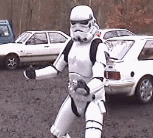
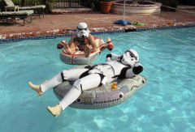
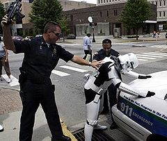
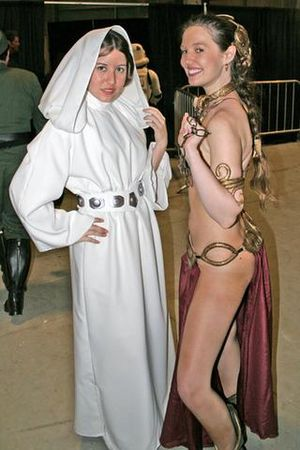

Star Wars
 De: La Frikipedia, la enciclopedia extremadamente seria.
De: La Frikipedia, la enciclopedia extremadamente seria.
| De la serie conflictos armados:
|
| Star Wars
|
| 
|
| Famosa escena de la película
|
|
| Lugar y fecha
|
Manicomio de George Lucas (léase casa) allá por los años 80 hasta la actualidad.
|
| Bandos
|
Imperio Heavy
|
Alianza Guiri/Deforme
|
| Fuerzas
|
Demasiado grande y borracha para contarla.
|
20 tios con un balón y uno con una espada (de cortar, pero de colorines)
|
| Comandantes
|
Darth Vader
|
Luke Skywalker
|
| Armas
|
Muchas pistolas y una espada.
|
Muchas pistolas y una espada. (No dije esto antes?)
|
| Bajas
|
Muchas
|
Pocas
|
| Resultado
|
El Imperio Heavy se convirtió al Reaggeton.
|
«Algunos la llaman "Gloria de Dios", yo simplemente la llamo Star Wars»
~ Andriv Liváhf
Hermoso trifostio cinematográfico creado por Jorge Lucas a lo largo de los siglos XX y XXI para forrarse (cosa que logró holgadamente) y para dar sentido a la vida de cientos de miles de frikis (y ahí se superó).Esta serie cinematografica dió sentido a todos los frikis que antes veian Estar 3 y ahora ven todos los dias una par de veces una de las pelis estas.

Este señor se iba a suicidar, en esto que vió Star Wars y mírenlo ahora
Cronología
La saga se rodó cronológicamente desordenada (a saber, en orden 4, 5, 6, 1, 2 y 3) y no está terminada porque aún hay libros para llegar hasta un noveno capítulo. Este desorden causará ciertas dudas a las futuras generaciones:
- En el episodio cinco tigres salidos. De repente ¡OH, SORPRESA! Darth Váder le dice a Luke que es su padre tras cortarle un brazo... (no encontró un momento mejor). El espectador sabe eso desde el episodio tres.
- A partir del episodio cuatro se nota una involución en la estética de las naves espaciales, que pasan a ser menos aerodinámicas y pintadas exclusivamente de blanco.
- Chewbacca, que debe ser un personaje influyente en la sociedad Wookie (no en vano son él y su mejor amigo quienes acuden a despedir a Yoda en el episodio tres) termina de contrabandista de tercera categoría que debe un copón de dinero a la mafia. Algo habrá hecho mal (a parte de haber sido un felpudo con patas, o una bola de pelo)
- Anakin Skywalker fue un midiclorianosexual que se levantó una princesa sin despeinarse. Su hijo biológico resulta ser Luke Skywalker, éste besa a su hermana Leia y le calienta la sopa al anciano fantasma de Obi-Wan (Ben Kenobi), (el cuál se lo coje en una orgía fantasmal al final de episodio 6).
- En el primer episodio Anakin Skywalker es un niño de 8 años. Una edad tan inapropiada para entrenarle como Jedi que podría ocurrir un desastre. Por eso Obi-Juan Kenobi, el Maestro Windows entre otros, se oponen a su entrenamiento (incluso R2D2). Al final entrena al niño (por su palabra a un moribundo) y claro, esto tiene consecuencias desastrosas para el universo... En el episodio cuatro Obi-Wan Kenobi se encuentra con Luke Skywalker (hijo de Anakin Skywalker, ahora el malvado Darth Vader que ha superado la adolescencia (o casi) ¡No duda ni un segundo en querer hacerle Sith!
- Si la serie fue un éxito comercial resulta difícil entender por qué a la mitad escatimaran medios y abandonaran las técnicas infográficas, haciendo desde entonces las escenas de naves con maquetas a escala (eso sí, fantásticas), pero se veía demasiado que era croma y recibieron tantas demandas que la orgía de neox emite la temporada clon para quedar bien, sin éxito claro.
- Si C-3PO es un recuerdo de la infancia de Anakin Skywalker es algo que no se le nota para nada a Darth Vader, que no parece desear ni poseerlo ni destruirlo, ni recordarlo.
- C-3PO tenia cierta atracción hacia R2-D2 que en realidad R2 no era de esa bando de nenitas gays por eso C-3PO es recordado como el androide gay de la peli. De hecho, al R2-D2 le gustan las mujeres humanas y ve mucho porno, ya que filmaba desnudas en su cuarto a la Amidala y posteriormente a su hija Leia Organa (que por su nombre parece que lee mucho).
- Al parecer Obi Wan padece de amnesia (ha de ser por la edad), pues no recuerda a R2-D2 despues que les ayuda en el episodio 3.
- En el episodio dos empiezan a construir la Estrella de la Muerte, en lo que emplean alrededor de veinte años. La destruyen en el episodio cuatro, y empiezan una nueva en el cinco, pero para el seis ya está casi finalizada y lista para atacar (se ve que le pillaron el truco). Además, la segunda también fue construida con un tremendo punto débil.
- El universo es tan pequeño que los humanos tienen que gastarse la pasta en naves espaciales para destruir y conquistar a otros
- En las peliculas del 1 al 3,(en la version latinoamericana) los personajes pronuncian yedai(jedi)y del 4 al 6 estos se cagan en la pronunciacion anglosajona y dicen jedi.
- Un ser despreciable, torpe y cateto llamado Jabjar Binks (alias Goofy, Ronaldiño Gaucho) regresa a su pueblo natal y lo quieren matar, despues de que hiciera... nada, el gordo del jefe lo pasa a comandante. Hoy en dia Jabjar se gana la vida haciendo viajes en naves por la galaxia y cometiendo cagadas que casi (porque los protas no mueren)le cuesta la vida a sus compañeros, pero ellos le quieren.
- Han Solo (alias Indiana Jonnes, Jack Ryan, Richard Kimble, etc) es el machomen de la peli, el solito le roba a su mejor amigo (Luke) a su novia-hermana (Leia), que ademas es princesa. Ademas de que puede entender los gritos gangosos de Cheewaca y dispare para donde dispare siempre dara en el blanco (al contrario de los Stormtroopers)
- En las guerras clon Anakin y los clones (no tiene padawan porque eso se lo inventaron en las guerras clon de neox) a el Jabba el Pizza Hut (alias:Fay Bastard)por supuesto cuándo se vuelve mayor no le tiene ningun respeto a los jedi y mete en el foso a Luke.
- Se nota el gran avance de los jedis en las peliculas ya que en la primera, segunda y tercera pelicula dan unos saltos y acrobacias de putas (que parecen los profesores del circo de tu barrio) pero al parecer en las 3 siguientes se les olvida como acerlo y dan una voltereta por peli.
Anécdotas
 Tambien se divierten ¿no?
- En España el título de la saga fue traducido como La guerra de las galaxias, lo que es incorrecto, ya que sabemos que toda la acción transcurre en una única galaxia, muy muy lejana.
- El título es absurdo ya que Star=estrella Wars=guerras con lo que el título sería lógico si hablase de una señora llamada Estrella Guerra pero como no es el caso, pues...a tomar por culo la bicicleta!!!
- La traducción española de Luke Skywalker es Lucas Trotacielos (suena horrible).
- A pesar de los avances informáticos del siglo XXI,George Lucas sigue queriendo que R2-D2 sea un actor dentro de un muñeco.
- Si introducimos =game("StarWars") en una celda de una hoja de cálculo de OpenOffice.org y pulsamos intro, aparece una ventanita con un entretenido juego, que nos ayudará a matar el tiempo, cuando nos hayamos leído los tropecientos artículos de la frikipedia. ¿qué? No, no es una broma!! ¿Cómo que no te lo crees? ¿Lo has probado? Que sí, coño, que si que funciona!joder es verdad!!!! (lo he probado, funciona. Fdo: Yo)(No es cierto, te sale "#NOMBRE?" y te quedas como estúpido pensando que realmente sí funcionaba, fdo. Tu)
- Yoda es de color verde porque cuando era joven, se compró un paquete de natillas danone caducadas. Al dia siguiente cuando se miró al espejo se vio verde y casi le da un infarto. Yoda denuncio a danone y danone para limpiar su nombre se vio obligado a cambiar el nombre a sus natillas,y pasaron a llamarse natillas danet. Las natillas le afectaron a Yoda en el cerebro,por eso es que dice las oraciones todas chuecas (Yo soy grande - Soy grande yo), y como vengaza, años mas tarde invento a los Yedy para matar a los que le robaron su bello rostro. Por lo que le paso con las natillas, sus amigos le empezaron a llamar Yogur en lugar de Yoda.
- Yoda tiene las orejas como un elfo porque es el hijo de Légolas y el sensei Miyagi.
- El senador Palpatine (alias Papa Benedicto) va vestido con el mismo traje mohoso desde la peli 1 a la 6, tiempo en el que se contruyo un imperio y 1 estrella de la muerte y media, asi es que se encuentre logico que sus subditos, o eran robots, o tuvieran que usar mascarilla (Darth Vader)
- En las primeras pelis se usaban palitos con papel albal en vez de espadas laser(y aun asi el abuelo se esfumó, debia ser de aire)
- Ver Star Wars puede producir un nerdgasmo
 El bajo sueldo le llevó al tráfico de drojas
Frases de la cultura Popular "Star Wars"
 Ya sabemos por que te vistes las películas
- Augrgh aurghraor!: Sólo Chewbacca sabe de lo que se está hablando.
- Coño! Que mierda es esa luzzfhgf...? : Frase usada antes de que la Estrella de la Muerte descargue su rayo contra tu planeta.
- Luke, yo soy tu padre: frase que se usa después de una prueba de paternidad y suponiendo que el sujeto hijo se llame Luke.
- Estar bien wars: dicese del sujeto zopenco de nacimiento, origen o accion
- Usa la Fuerza: frase demasiado utilizada que ya no da risa a nadie, a menos que hallan acabado de ver alguna de las peliculas de "Star Wars"
- Arturito(R2D2)Sois un Gilipollas: frase creada en la traduccion Iberica de "Star Wars" que fue adoptada en España retirando el nombre de "R2D2" y depositando el del gilipollas usada muy frecuentemente.
- Eres como una Princesa Leia: dicese en la mayor parte de los casos de la mujer FEA.
- Ya respira como Darth Vader: dicese de la persona que esta en sus ultimas y que ya va a morir.
- Ese hombre logro construir un sable láser que funciona!: Jamás se ha dicho, pero quedaria bien que no?
- Se te entiende menos que a un Wookie gritando: Se dice para personas que hablan muy deprisa o para extrangeros.
- Estas mas quemado que los Tios de Luke: Utilizada cuando te bronceas y se te pasa lo quemado.
- Falla mas que el Hiper-Propulsor del Halcon Milenario: Frase usada cuando algo esta descompuesto o soberanamente JODIDO!
- Que la fuerza te acompañe:quiere decir que no t ovides nada y que todo valla con tigo, eso creo vamos.
- Estar a la wars: Se usa para denominar un look futurista pero al mismo tiempo de antaño
- Ha pasado al lado oscuro: Dicese de la persona que tras haber viajado con ilusión a conocer el continente Africano para colmo se encuentra con una carretera que está sin iluminar. NOTA: El frikipedista que lo escribió fue a percatarse si era cierto y terminó pasandose al lado oscuro (y devorado en la oscuridad por una tribu canibal).
- Obi Wan, se que erais amigos, se que lo erais... : mejor manera de desperdiciar tus ultimas palabras en el lecho de muerte u/o paritorio estelar.
- PADME!, guarra, zorra, quitate las bragas!!: frase celebre de Yoda.
- Tu madre es tan peluda que solo habla el Wokie: chiste que inventó Darth Vader en la guerra para desmoralizar a los Wokies y ganar la guerra.
El sindrome de Star Wars
Despues del episodio IV,una especie del friki comun evoluciono en el friki de star wars.No es una especie en si,se cura con
dos hoxtias bien das y obligarle a ver la serie COMPLETA de Walker:Texas Ranger.Nunca falla.
Pero vamos al turron.Se caracteriza por:
- Creer ser jedi/sith/wookie/utapiano/etc,etc,etc
- Hacerse gayolas con la princesa Leia, a la cual no se le ve un chacho de carne en toda la puta saga, pero cuando hace de esclava de Jabba ahhh!!.. ya vuelvo, voy por leche.
- Tener como Meca la casa de George Lucas
- Querer salvar la galaxia cuando no pueden ni salvarse ellos mismos
- Creer que su cuchara es un sable laser, en su defecto, tambien sirve una patata frita
- Querer luchar contra el lado oscuro de la fuerza cuando no pueden ni depurar un virus
- No reproducirse salvo con los de su misma especie
- Querer construir su propio destructor estelar
- Matar a Posti por querer exterminar la mayoria de las razas de la galaxia(no preguntes por que...)
- Llamar a Lola joven aprendiz hace que esboce una sonrisa y de saltos por la facultad de politicas.
Y un largo etc de Querer/Poder relacionado con Star Wars.Pero suelen ser buenos amigos si no dan la brasa mucho
Los Mandamientos del Jedi
- Respetarás al consejo Jedi aunque te cueste la vida.
- No dudarás de la fuerza.
- Peregrinarás a Tatooine.
- Honrarás a Obi Wan Kenobi.
- No matarás a Lord Sith
- No te pasarás al lado oscuro.
- No robarás las naves ajenas.
- Participarás en las carreras de vainas.
- No abandonarás a tus androides.
- No te reirás de la cara de Lord Vader.
Grandes verdades de Star wars

Todos al ver la escena del
"Yo soy tu padre" - Nadie entiende como es que si se supone que el maldito sable laser de quema solamente en el episodio IV hace desparecer sin dejar rastro a obi-wan
- ¿Por qué todos dicen Que la fuerza te acompañe si el refrán dice que mas vale maña que fuerza?
- Detras de la mascara de Darth Vader hay un hombre que de pequeño quiso ser un jackas y por patoso se cayo en un rio de lava.
- ¿Por qué cuando morían Obi Wan kenobi y Yoda no dejaban un cadáver como todo el mundo?.
- El mayor jedi de la historia (yoda) era dislexico "las guerras clon empezado han".
- En el retorno del jedi darth vader le pide a luke que le quite la mascara y luke le dice que si lo hace morira sin embargo en el final del videojuego "El poder de la fuerza"(Cuenta lo que sucede entre el episodio 3 y 4) darth vader esta un buen rato sin la mascara y esta tan campante y hablando tranquilamente. Es más, en el episodio 5 sale sin mascara en una escena de espaldas sentado dentro de su gran "huevo kinder que, al igual que la máscara, le sirve de soporte vital"(minuto 42, segundo 47 del episodio 5)
- ¿Por qué Anakin cambia tanto durante toda la primera trilogia y padme se queda igual? Respuesta: Por que Padme está mas buena.
- ¿Como es posible que alguien que va a reconocerte que es tu padre antes te corte la mano y, además, te deje caer al vacio?
- ¿Como es posible que Obi-Wan, Qui-Gon, Yoda, Darth Vader... tengan tuenti estando muertos?¿Se aburren estando unidos con la fuerza?
- ¿Como es posible que las naves de la primera trilogia tengan una forma más aerodinámica que las de la segunda trilogía, debiendo ser estas más modernas?
- nadie sabe de donde coño salio el sable de luz?
Acompáñese también
Enlaces externos
Autor(es):
- Krusher
- Nexo
- Simoman
- Hashis
- Ranset
- Ferchu20
- Barbadeus Motsand
- Doctor grijander
- Fender07
- Gusgus
Frikipedia 2005-2016, Licencia
GFDL 1.2 - Extraído por FrikiLeaks